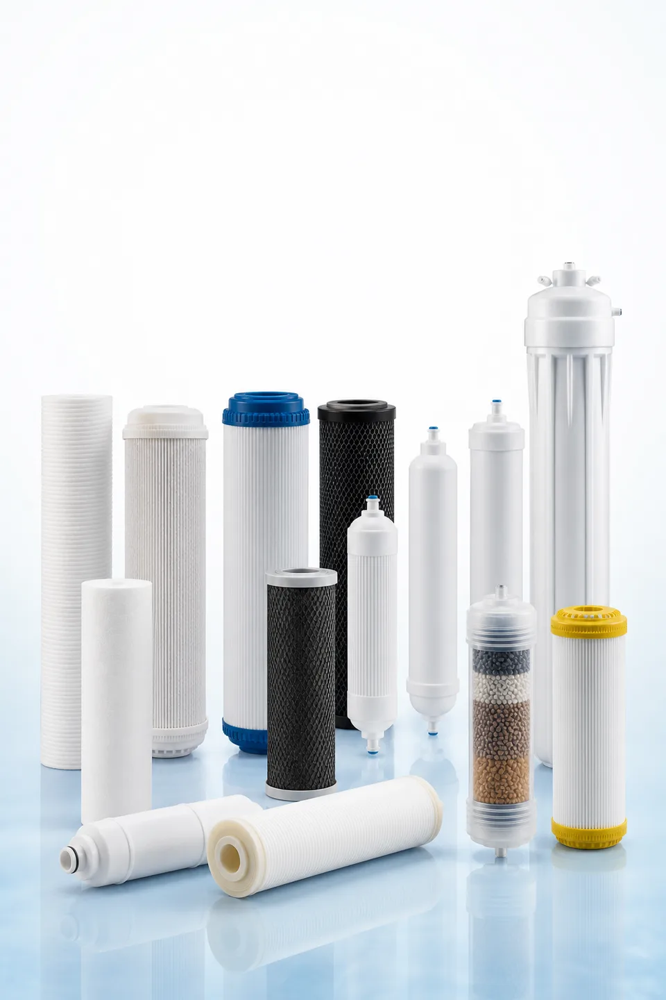

Guía de compra de cartuchos
Catálogo de cartuchos filtrantes de agua
Compare familias, criterios de selección y opciones de marca privada para purificadores, dispensadores y recambios.
Obtener el catálogo de cartuchos✓ Catálogo A4 de 16 páginas✓ Opciones OEM y marca privada✓ Guía de selección y especificaciones✓ Sin precios públicos

PP · GAC · CTO · T33 · RO · UF
Familias incluidas
El catálogo se centra en selección técnica, formatos compatibles y datos necesarios para cotizar, sin alegaciones sanitarias ni certificaciones no verificadas.
Sedimentos PP
GAC / UDF
Bloque de carbón CTO
T33 en línea
Membrana RO
Membrana UF
Resina / medios especiales
Yuchen Water
Indique dónde debemos enviar el catálogo
Complete sus datos profesionales para recibir un enlace privado válido durante 24 horas.
Catálogo A4 de 16 páginas
Opciones OEM y marca privada
Guía de selección y especificaciones